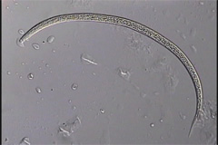

5-female/thumb.jpg)
Adult Female Prismatolaimus intermedius from Avocado Mulch
4-female/thumb.jpg)
Adult Female Primatolaimus sp. cf. mulcoomus from Avocado Mulch
1-female/thumb.jpg)
Adult Female Primatolaimus n. sp. A from the Santa Rosa Plateau Ecological Reserve

Adult Female Prismatolaimus n. sp. B from the Santa Rosa Plateau Ecological Reserve